Angular + NativeScript
- NativeScriptin perusteet
- Angularin perusteet
- UI/UX Suunnittelua ja kehitystä
- CSS3, XML, TypeScript
- Tuotannossa työskentely
Plantiful on mielialapäiväkirjana toimiva sovellus, jonka käyttöä motivoi kirjausten mukaan kasvava kasvi. Sovellus on Ticorporate VI, 12 viikkoa kestäneen projektin tuotos.
Projektin aikana suurin osa työajasta meni koodaustehtävien ja projektinhallinnan työtehtävien parissa, mutta muutakin tein. Projektin alussa keskityin Scrumin käytäntöihin syvemmin, sekä perehdyin GITin perusteisiin muistin virikistykseksi ja suunnittelin tiimille sopivan workflown Git-versiohallinnan käyttöä varten. Projektin aikana käytettiin erittäin paljon hyödyksi pari-ohjelmointia joten keskityn tässä raportissa sekä yhdessä tuotettuun koodin että täysin itse implementoimaani koodiin.
mood-entry.component.html
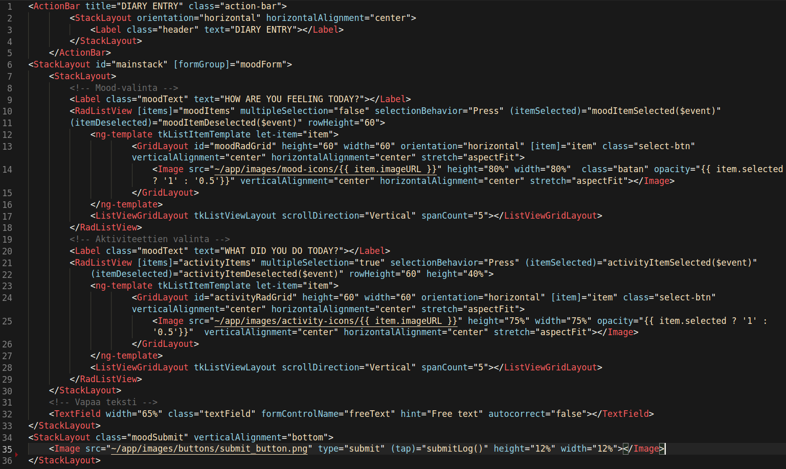Mood- ja aktiviteettien valinnassa käytetään hyväksi NativeScriptin RadListView komponenttia jolla loopataan läpi “moodItems” ja “activityItems” palauttamat arvot. Kuvat saadaan näkyviin viittammalla itemien “.imageURL” avainarvoon. Viimeinen image toimii submit-näppäimenä, jota painaessa kutsutaan submitLog() metodi.
mood.service.ts
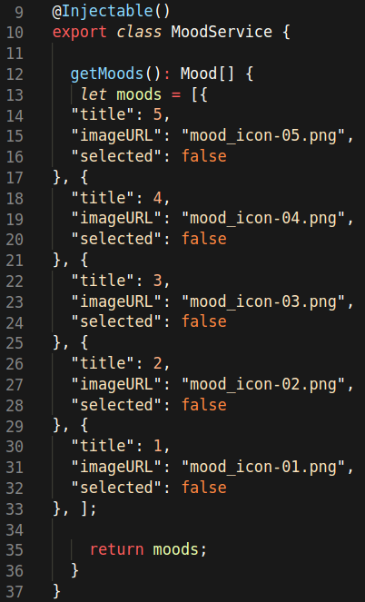Moodit sekä aktiviteetit palautetaan omista serviceistä jonne ne on kovakoodattu.
mood-entry.component.ts
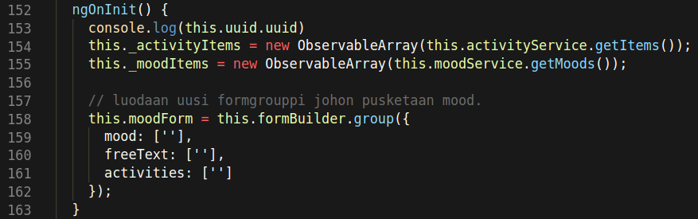Kun komponentti initialisoidaan (ngOnInit()) luodaan lokaaleihin muuttujiin uudet ObservableArrayt jotka sisältää activity- ja mood-servicen palauttaman datan.
mood-entry.component.ts
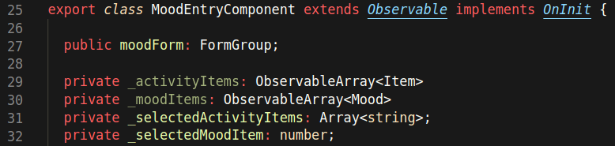Lokaalit muuttujat joihin luodaan ObservableArrayt ja selectedItemit.
mood-entry.component.ts
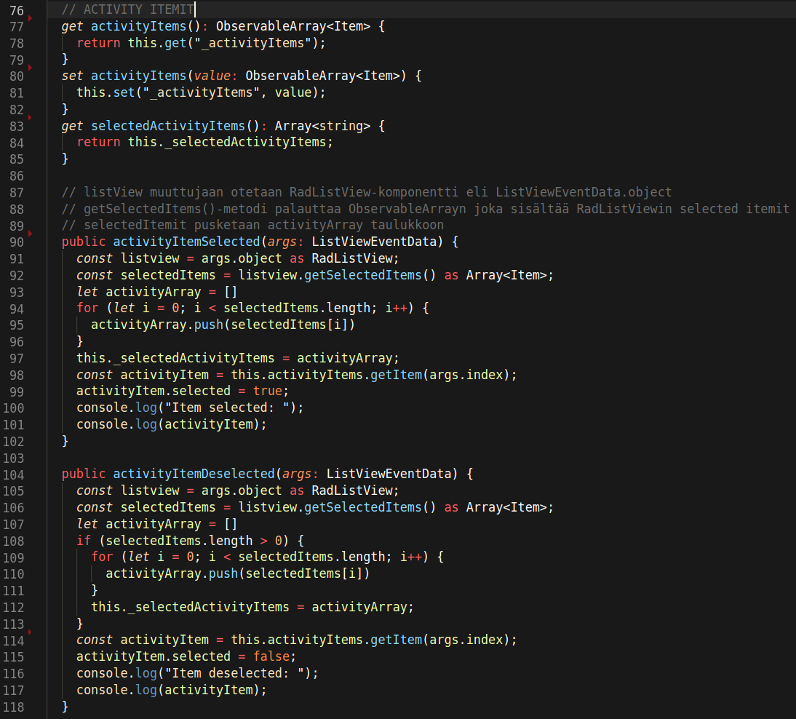Muuttujaan const selectedItems kutsutaan listview.getSelectedItems(RadListView komponentin oma metodi), joka palauttaa taulukon. SelectedItems pusketaan activityArray taulukkoon joka astetaan private _selectedActivityItems muuttujaan. Valittaessa itemi asetetaan itemin selected avainarvo “true”. ActivityItemDeselected() toimii täysin samalla periaatteella, lopuksi itemin selected arvo muutetaan vain “false”.
mood-entry.component.ts
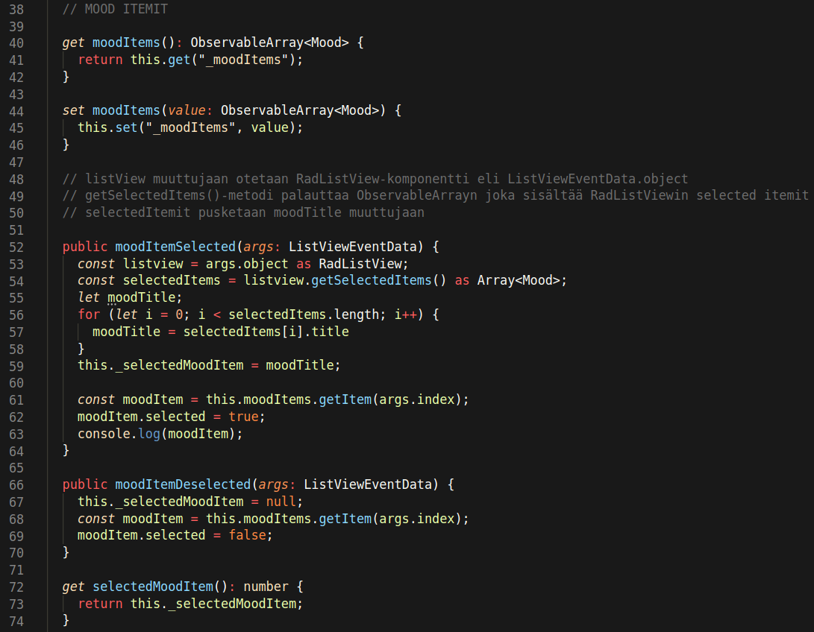Moodin valinta toimii täysin samalla periaatteella kun aktiviteettien valinta, erona se että moodeja ei voi valita useaa kerralla joten tarvetta taulukolle ei ole. Kun kutsutaan moodItemDeselected metodia asetetaan this._selectedMoodItem “null”, jolla poistuu deselected moodi valinnasta.
mood-entry.component.ts
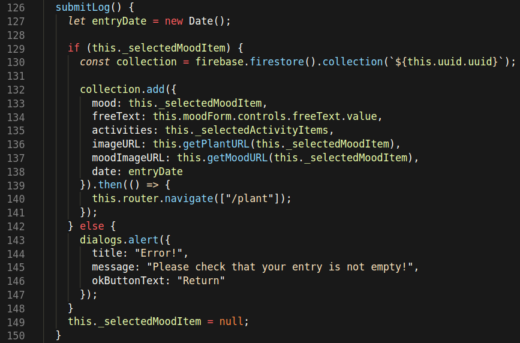submitLog() funktiolla lähetetään kirjaus tietokantaan, tietokannan collection määritellään 'uuid:n' mukaan, kun kirjaus on suoritettu, sovellus navigoi 'plant'-komponenttiin.
entries.component.html
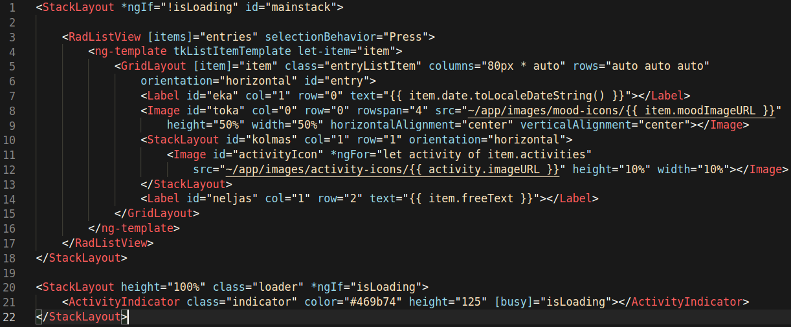Komponentissa näytetään kaikki käyttäjän tekemät kirjaukset. RadListViewiin haetaan itemit “entries” muuttujasta. Päivämäärä muutetaan järkevään muotoon hyödyntäen daten-formatointia toLocaleDateString() metodilla. Kaikki kirjauksen aktiviteetit loopataan *ngFor:lla olion activities taulukosta.
entries.component.ts
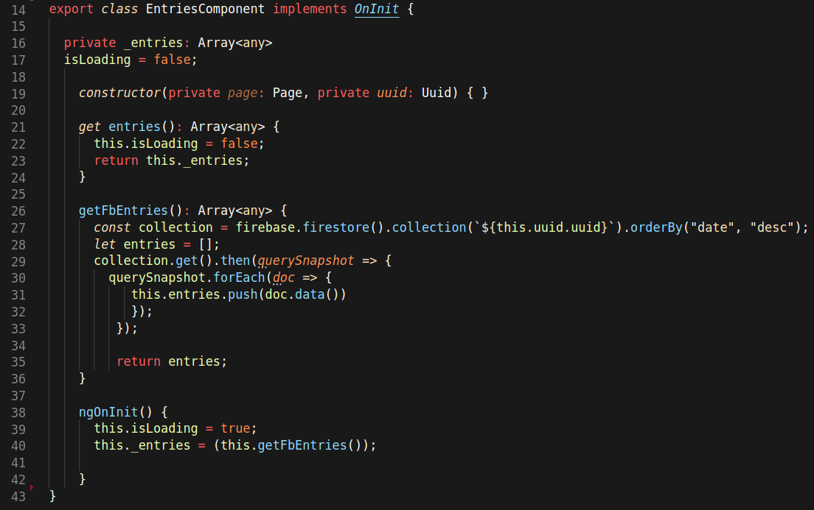getFbEntries() hakee ja palauttaa kaikki käyttäjän tekemät kirjauset oman uuid:n perusteella. Komponenttia initialisoidessa asetetaan this._entries muuttujaan tietokantakutsulla kirjaukset, ja get entries() palauttaa ne Viewiin(entries.component.html).
app.component.html
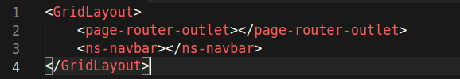navbar.component.html
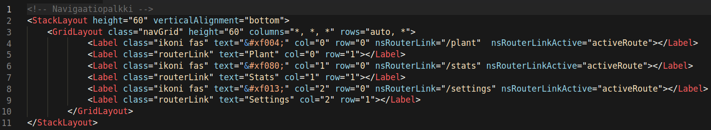Navbar on aktiivisesta reitistä huolimatta aina näkyvissä, se on asetettu routerOutletin kanssa app.componenttiin. NsRouterLinkActivella muokataan Labelille tumma background jotta tietää mikä reitti on valittuna.
Projektissa autoin myös mallintamaan tietokantaamme, kuvassa kirjauksen tietorakenne. Tietokantaan luodaan jokaiselle käyttäjälle UUID:n perusteella collection, johon luodaan dokumentit kirjauksista. Kirjaus sisältää myös imageURLit kasvin osaa varten sekä mood-iconia varten kirjauslistaan.
Projektin alussa suunnittelin tiimille sopivan workflown GITin käyttöä varten, toimin myös tiimin pääasiallisena GIT tukihenkilönä.
Projektin aikana toimin sivutyönäni tiimin Scrum Masterina. Pidin huolta että Scrumin riittejä noudatetaan sekä johdin ja toimin puheenjohtajana kaikissa Scrum-palavereissa. Tavoitteena oli oppia Scrum Masterina toimimista ja perehtyä Scrum-prosessin toimintaan.
Projektin aikana havaitsimme prosessissa paljon haasteita virheitä ja etenkin sprint retrospektiivit auttoi niitä ratkomaan, parhaiten hyvät muutokset meidän tiimissä tuli ilmi planning dayn kohdalla kun saimme kehitettyä taskeja ja sprintin tavoitteita hyvinkin realistisen kokoisiksi, ja taskit pystyttiin hyvin käsittelemään aina daily scrum-palavereissa.
Koen tämän projektin kehittäneen projektityöskentely- sekä ohjelmointi-taitojani melko paljon. Tekninen osaaminen ja itsevarmuus koodin tuottamiseen on kasvanut. NativeScriptin antamat mahdollisuudet ovat myös selkistyneet, tietoa käytettävistä komponentaista sekä plugineista on kertynyt paljon.
Paljon joutuu edelleen turvautumaan tutoriaaleihin ja niiden soveltamiseen, sekä googleen, mutta soveltaminen käy luontevammin kuin projektia aloittaessa. Asioita osaa myös miettiä laajemmin eri näkökulmista.
Voisin ehkä sanoa että eniten olen saanut tästä projektista irti projektinhallintaan liittyvistä työtehtävistä eli Scrum Masterina toimimesta.